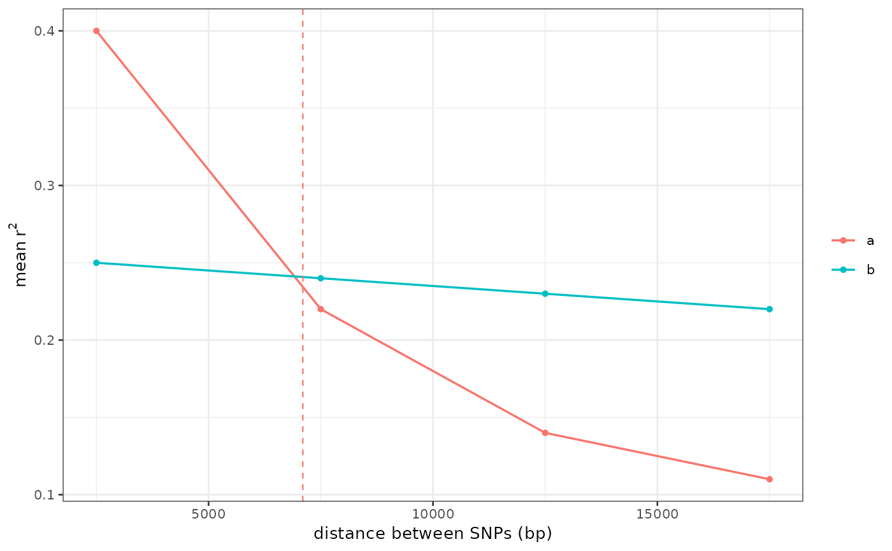

Mean r-squared against the distance between SNP pairs, one line per group, with the half-decay distance marked.
Arguments
- ld
The tibble from
read_ld_decay()(orplasgenomicsutils ld_decay).- show_half_decay
Mark each group's half-decay distance with a vertical segment.
- colours, colors
Optional named colour vector for the groups.
Examples
# the curve itself comes from `plasgenomicsutils ld_decay`; read_ld_decay() loads it
ld <- data.frame(group = rep(c("a", "b"), each = 4),
bin_mid = rep(c(2500, 7500, 12500, 17500), 2),
n_pairs = 100,
mean_r2 = c(0.40, 0.22, 0.14, 0.11, 0.25, 0.24, 0.23, 0.22))
ld$group <- factor(ld$group)
attr(ld, "ld_half_decay") <- data.frame(group = c("a", "b"),
half_decay_bp = c(7100, NA))
plot_ld_decay(ld)
